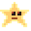
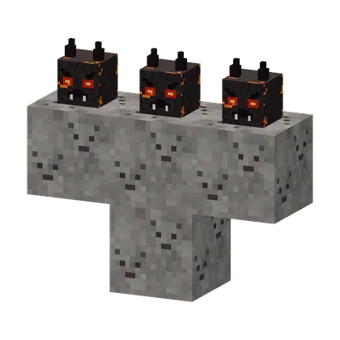

The Aangebrande MikaDe Aangebrande Mika
- Call him, in any dimension: a T of 4 ash blocks (or as aarde) with 3 verkoolde mikakoppen on top, standing or on the wall. Just like the wither.Oproepen, in elke dimensie: een T van 4 asblokken (of asaarde) met 3 verkoolde mikakoppen erop, staand of aan de muur. Net als de wither.
- First he bakes up for 7 seconds and can't be hurt. Then: "WIE HEEFT MIJ... AANGEBRAND?!" and he pushes everyone away (no damage).Eerst bakt hij 7 seconden op en kan hij geen schade krijgen. Dan: "WIE HEEFT MIJ... AANGEBRAND?!" en hij duwt iedereen weg (zonder schade).
- He floats above you and fires volleys of 3 slow burning coals (5 damage + 3 s of fire), announced with hissing and glowing heads.Hij zweeft boven je en schiet salvo's van 3 trage brandende kooltjes (5 schade + 3 s brand), aangekondigd met sissen en gloeiende koppen.
- Below half: doorgebakken. He calls 2 Vonk-Mikas once and shoots faster, but after every third volley he has to catch his breath low above the ground: then he takes 1.5× damage.Onder de helft: doorgebakken. Hij roept één keer 2 Vonk-Mika's en schiet sneller, maar na elk derde salvo moet hij laag bij de grond uithijgen: dan krijgt hij 1,5× schade.
- He never breaks blocks, never sets anything on fire and only attacks players. "NJEG... IK BEN... DOORGEBAKKEN!"Hij breekt nooit blokken, steekt niets aan en valt alleen spelers aan. "NJEG... IK BEN... DOORGEBAKKEN!"
- HealthLevens
- 300, boss bar300, baasbalk
- DropsLaat vallen


 the gloeister (always), 4–8 gloeikoolgruis, 1–3 grillkoolde gloeister (altijd), 4–8 gloeikoolgruis, 1–3 grillkool
the gloeister (always), 4–8 gloeikoolgruis, 1–3 grillkoolde gloeister (altijd), 4–8 gloeikoolgruis, 1–3 grillkool

Calling himOproepen
Four ash blocks in a T, three charred Mika heads on top. You only need the heads from Knekel-Mikas: collecting three is a quest of its own (Hoofdzaak).
Vier asblokken in een T, drie verkoolde mikakoppen erop. De koppen krijg je alleen van Knekel-Mika's: er drie verzamelen is een quest op zich (Hoofdzaak).
Drops
| ItemVoorwerp | CountAantal | ChanceKans |
|---|---|---|
| Gloeister | 1 | alwaysaltijd |
| 4–8 | alwaysaltijd | |
| 1–3 | alwaysaltijd |